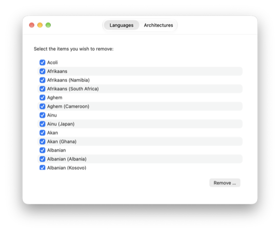

Monolingual is a program for removing unnecessary language resources from macOS, in order to reclaim several hundred megabytes of disk space. It requires a Mac with Apple silicon and at least macOS 27.
I don't know about you, but I use my computer in only one (human) language — English. And I'm willing to bet that you do too, albeit perhaps not English. So why do you have a bunch of localization files for the operating system filling up your hard drive? Enter Monolingual — a handy utility for reclaiming your space for more useful things… like international mp3 files, email or whatever you like.

Each of these is the last release that runs on the systems listed.